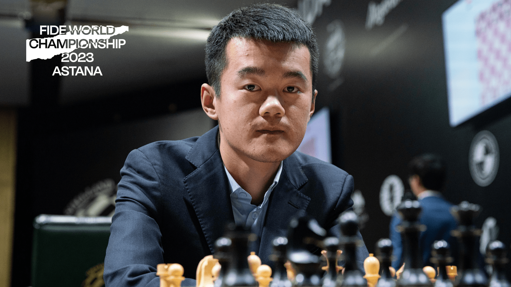

The life of the world chess champion
Introduction
Last week, a new world chess champion was crowned, Ding Liren, who ended the reign of five-time world champion Magnus Carlsen. He defeated Russian grandmaster Ian Nepomniachtchi in the tie-breaker round of the world chess championship final. In this article, we will delve deeper into the life and achievements of this Chinese grandmaster.
Birth and Education
Ding Liren was born in Wenjhou, China, and started learning chess at the age of four. He attended Zhejiang Wenjhou High School and later graduated from Peking University Law School.
Chess Career
Ding Liren has been a dominant force in Chinese chess in recent years, winning the Chinese championship in 2009, 2011, and 2012. He has also represented China in the Chess Olympiads of 2012, 2014, 2016, and 2018. In addition, he became the first Chinese player since Wang Yue to break into the top 10 of the FIDE world rankings. Ding also holds the distinction of being the highest-rated blitz player as of July 2016. In September 2017, he qualified for the Candidates Tournament and placed fourth in the tournament in 2018. He went on to win the Sinquefield Cup in August 2019, defeating Magnus Carlsen in the process. Ding also qualified for the Candidates Tournament 2020-2021, and although he did not initially qualify in the 2022 tournament, he was given a chance to play due to the disqualification of Sergey Karjakin. Ding achieved second place in the Candidates 2022 and ultimately earned a chance to play in the World Chess Championship.
In the world championship final, Ding Liren faced off against Ian Nepomniachtchi, and in a stunning performance, he emerged victorious in the tie-breakers, becoming the first Chinese player to win the world chess championship.
Conclusion
Ding Liren's rise to prominence has been remarkable, and he has become an inspiration to many young chess players in China and beyond. His accomplishments in the sport have elevated the profile of Chinese chess and have helped to establish China as a force to be reckoned with in the chess world. As he continues to compete and excel at the highest level, we can expect to see more incredible performances from this talented grandmaster in the years to come.